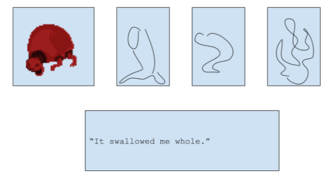
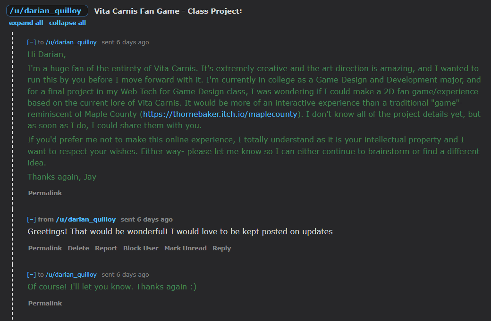

PROJECT 3 PROPOSAL
I. High Concept
- This is an educational interactive experience that focuses on acquainting the participant on the various
species of “Vita Carnis” through a series of interactive story segments and first hand accounts. These
interactive elements include a survey and a card matching section.
II. Genre
- Psychological Horror
- Educational
- Survey Horror
III. Platform
- Primary platform is a computer desktop, on the web. (It’s a project stretch goal to adapt it to a mobile
device, but not my primary stretch goal.)
- I’m going to be using the browser DOM for this project primarily, and I may use Howler depending on the
complexity of the audio I want to implement.
IV. Story
- This experience focuses on the findings of the National Living Meat Research, with interactive and
game-like segments that unsettle and clue-in the player to the greater narrative. National Living
Research
investigates and categorizes a genus of creatures dubbed “Vita Carnis”. Each creature is made of
“muscle, organs, and bones” and “greatly resemble mammals without skin or raw meat”. Vita Carnis have
appeared
worldwide recently and the different species range from harmless plant-like structures to elongated
humanoids, all of which seem to be designed to put humans back on the food chain.
V. Aesthetics
- The art style will consist of mostly pixel-art graphics, except for the uncomfortable close-up images.
- The sound profile includes ambient nostalgia-evoking music as well as noises from the creatures.
- I was inspired by games like Maple
County, No Players
Online, Be Honest.
VI. Gameplay
- The player is taught to identify the different species of Vita Carnis and how to safely interact with
them. After entering the experience, the player is greeted with a short survey that asks their
experience with
Vita Carnis. Next, the player is introduced to each of the species of Vita Carnis, and then shown the
flashcard section. Intermittently, there are horror elements like uncomfortable close-ups and other
things (I’m still working this out exactly)
- The player will interact with this experience by clicking with the mouse.
- My stretch goal is to create a “Care for a Trimming” section that has the player experience pet
ownership of a Trimming, a non-harmful species of Vita Carnis. This would be more clicking/dragging
elements.
VII. Mockups
Flashcard/Matching Mockup - Drag the creature that best suits the statement to the statement box.

Info Card Mockup

Brainstorming on Milanote

VIII. Other
- I did not create the lore of Vita Carnis- it was created by a talented Youtuber named Darian Quilloy.
- I’m a really big fan and I was inspired by his unique web series to
create a game like this. Before working on this project, I wanted to get express consent from the
creator of Vita Carnis. I reached out to him on Reddit, asking if I could adapt the video series into an
interactive web experience, as long as I heavily credited him. I’ve attached our conversation below.

IX. About the developer
- My name's Jay Miller- I'm a second year Game Design and Development student at RIT, minoring in 2D
Studio Art and Psychology.
-
My goal as a developer is to create philosophical experiences that deal with the human condition and
push the limits of “what is a game?”. Outside of class, I spend time trying to improve my art, perform
onstage, and get too deeply invested in obscure media.